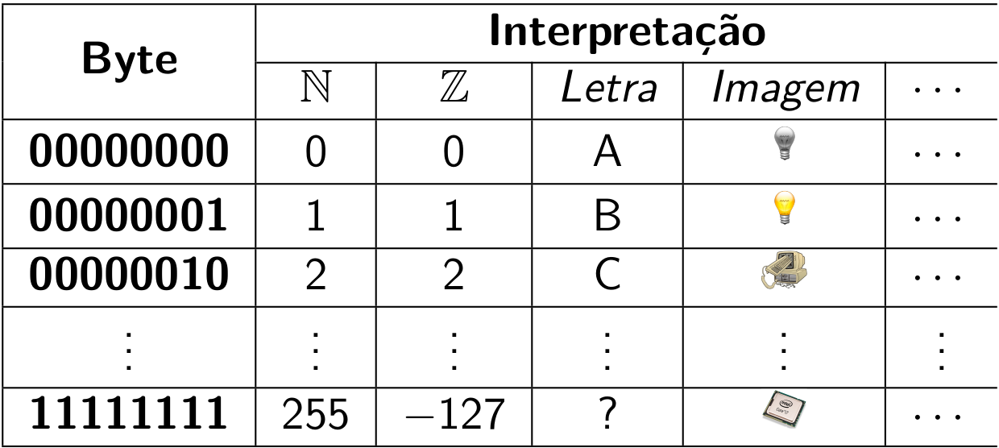

Linguagem de Programação
Programação / Linguagem de programação
Programação é o processo de transformar o algoritmo em instruções em uma linguagem de programação, que permite a formulação de instruções a um computador. A linguagem de programação é um conjunto de termos (vocabulário) e regras (sintaxe) que permite a formulação de instruções para um computador.
Toda linguagem de programação é baseada em instruções primitivas, as entidades mais simples que ela trata; em formas de combinação destes elementos simples, e em formas de abstração destas combinações de modo que possam também ser consideradas como primitivas1. Por exemplo, pode-se combinar muitas instruções primitivas necessárias para exibir uma mensagem na saída padrão de tal forma que este processo seja fácil e intuitivamente obtido por uma nova primitiva: print.
Alan Turing mostrou que 6 primitivas são suficientes para computar qualquer coisa [computável]. Assim, uma linguagem de programação [Turing-completa] define tanto a sintaxe quanto a semântica necessárias para traduzir o pensamento computacional em passos que um computador pode executar.
As linguagens modernas têm um conjunto maior e mais conveniente de primitivas que as 6 de Turing, e permitem que você as agrupe para elaborar programas mais complexos. Estas novas abstrações também podem ser agrupadas, e assim sucessivamente. Por exemplo, as primitivas mais comuns são: números (\(1\), \(-2\), \(3.14\)), símbolos ("@", "Alan M. Turing", ":)"), e operações simples (\(+\), \(-\), \(\times\), \(\div\)).
A sintaxe da linguagem indica quais expressões são simbolicamente corretas (1 + 1), ou não (João ÷). A semântica lida com o significado associado a uma expressão sintaticamente correta, que pode ser logicamente correto (dois = 1 + 1) ou não (area_do_quadrado = lado + lado). Erros sintáticos são relativamente fáceis de se encontrar, mas o mesmo não pode ser dito sobre erros semânticos.
A linguagem de máquina é a que o hardware [específico] entende (código binário). A vantagem é que não é preciso gastar esforços traduzindo instruções, mas é praticamente incompreensível para humanos [normais].
Uma linguagem de baixo nível usa instruções mnemônicas para tentar facilitar a programação. A vantagem é ser muito mais inteligível que a de máquina, mas também é pouco amigável e, dependendo do hardware utilizado, precisa ser traduzida para linguagem de máquina.
Já uma linguagem de alto nível usa um vocabulário mais rico para facilitar programação. É "facilmente" aprendida e independente do hardware, mas precisa ser traduzida para linguagem de máquina. As linguagens de alto nível claramente possibilitam programas mais breves e legíveis, mas o fazem pela composição e abstração das primitivas da máquina. Conhecendo uma linguagem de programação, pode-se elaborar programas bem interessantes.
O exemplo tradicional é o "Olá mundo!".
0111 1111 0100 0101 0100 1100 0100 0110
0000 0010 0000 0001 0000 0001 0000 0000
0000 0000 0000 0000 0000 0000 0000 0000
0000 0000 0000 0000 0000 0000 0000 0000
0000 0010 0000 0000 0011 1110 0000 0000
0000 0001 0000 0000 0000 0000 0000 0000
0100 0000 0000 0100 0100 0000 0000 0000
0000 0000 0000 0000 0000 0000 0000 0000
(continua por mais 2120 linhas)
Dica
Compreender os fundamentos e técnicas de programação é mais importante que dominar uma linguagem específica.
Havendo um programa sintaticamente correto, é preciso traduzi-lo da linguagem de alto nível para a linguagem de máquina para que haja instruções que o computador usado consiga interpretar (cada dispositivo fala sua própria linguagem). Neste processo, o código fonte é verificado para garantir que não contém erros sintáticos. Dependendo da implementação da linguagem, este código é compilado, gerando um objeto (a versão das instruções originais em binário) que, por sua vez, é interpretado por um programa gerando um arquivo que pode ser executado.
Qualquer linguagem de programação pode ser interpretada ou compilada, estas são formas de implementação (e não características da linguagem) que não são, necessariamente, exclusivas. A interpretação é realizada por um programa específico (o interpretador) que realiza as instruções pelo programa sendo interpretado de modo que este seja executado. Imagine que, a cada passo, uma instrução é interpretada e executada. Já a compilação (realizada pelo programa compilador) traduz completamente o programa original em código objeto que pode ser executado pela máquina.
A interpretação tende a ser mais portátil, e tem a "vantagem" de realizar um passo de cada vez, já a compilação pode a gerar código otimizado e que não precisa ser interpretado a cada instrução. Outra diferença é que interpretadores são mais simples de se construir que compiladores.
Existem diversas ferramentas para realizar este processo, como o compilador GCC para linguagem C ou o interpretador Python 3. No caso do exemplo abaixo, supondo que se esteja no diretório do arquivo com código fonte, bastaria executar na linha de comando:
Conceitos Básicos
A execução do programa passa pela interpretação das instruções apresentadas. Uma instrução <instr> é um comando sintaticamente correto que pode ser diretamente executado. Já uma expressão <expr> é uma instrução que precisa ser interpretada e que produz um resultado (que pode ser armazenado). Por exemplo, ao interagir com um agente humano como executor do algoritmo, ele entende a instrução <Levante> e a realiza, mas não há uma informação produzida como resultado disto. Em seguida, podemos passar a expressão <Fale seu nome>, cujos termos precisam ser analisados e interpretados no contexto para que o agente possa reconhecer quem deve executar (o próprio agente), qual a ação a ser executada (falar) e sobre o que ela deve executar (o nome) - só então ele pode executar o que foi solicitado e produzir uma nova informação (o nome falado), que se pode ser armazenado (ou não) para uma necessidade futura.
Uma expressão pode ser composta por apenas um valor, como <Pedro> ou <42>, e também por diferentes valores e operadores. A expressão 2 + 3 produz o resultado 5 ao ser executada.
Tipo de Dado
Todo processo no computador gerencia a execução de um programa armazenado, a implementação de um algoritmo computacional nãos sendo, portanto, possível dissociar um algoritmo de dados manipulados - o próprio programa é um conjunto de dados (as instruções). Além disso, praticamente todos os programas manipulam dados fornecidos e gerados no processamento, na forma de variáveis ou constantes, que são os objetos de dados básicos manipulados em um programa2.
Ao executar um algoritmo computacional, estamos exigindo esforço da máquina para realizar o trabalho de processamento. Este esforço depende da quantidade de instruções sendo executadas, e do custo de cada instruções (podemos ter instruções mais simples e baratas, e instruções mais complexas e caras). A organização dos dados tem impacto direto neste esforço, e buscamos deixá-los organizados de forma a tornar o processo menos custoso. Por exemplo, imagine que seu problema é interpretar números e somá-los, é muito mais fácil1 fazer isso se lhe forem apresentados os números estruturados como \(49\) e \(1\) (com resultado \(50\)) que se fossem como \(XLIX\) e \(I\) (também com resultado \(L\)).
A memória do computador é um conjunto ordenado de bits, ou seja, toda informação é armazenada como zeros e uns e há uma ordem posicional entre eles (existe um primeiro bit, que pode ser 0/1, um segundo bit que também pode ser 0/1, e assim sucessivamente até um último bit). Para facilitar, há uma nomenclatura específica para lidar com a quantidade de bits sendo 1 byte (8 bits) a unidade mais comum para quantificá-lo. A composição de bits permite representar mais estados; 2 bits são 4 estados (00/01/11/10), 3 bits definem 8 estados, e assim sucessivamente - havendo \(n\) bits podemos definir \(2^n\) estados distintos. O significado da informação armazenada depende da forma de interpretar estes bits, um mesmo conjunto de bits tem significados diferentes se for interpretado como um número, um símbolo ou outra coisa. Por exemplo, um byte pode assumir um de 256 valores numéricos diferentes, mas também pode representar inúmeras informações diferentes se mudarmos a forma de interpretá-lo.

A representação do dado é necessariamente binária mas a interpretação dos bits é o que define a informação. Esta interpretação é determinada pelo tipo de dado, e cada tipo tem suas características específicas definidas pela linguagem de programação. Por exemplo, o conjunto de bits 01000001001000000000000000000000 pode ser interpretado como o valor numérico do tipo inteiro 1092616192, como o valor numérico do tipo real 10.0 ou como um tipo simbólico A (ASCII). Estes três tipos de dados, entre outros, geralmente estão presentes em qualquer linguagem de programação.
Dica
Como um mesmo conjunto de bits pode ser interpretado de diferentes formas, é necessário saber que tipo de dado foi armazenado na memória para interpretá-lo corretamente.
Um tipo abstrato de dado (TAD) determina um tipo de dado e as operações definidas sobre ele, delimitando assim a quantidade de informação necessária para manipulação dos valores pelo computador e, consequentemente, facilitando a programação. Um exemplo de TAD é o conjunto de números naturais \(\mathbb{N}\) e suas operações aritméticas \(+, -, /, *\)).
Estrutura de Dados
Forma concreta de se implementar um tipo abstrato de dados em uma linguagem de programação, de modo a organizar os dados na memória para facilitar o acesso e a manipulação destes.
Portanto, para cada linguagem de programação específica, o tipo do dado determina:
- o significado do valor armazenado;
- como o valor é armazenado nos bits;
- quais os possíveis valores que podem ser armazenados; e
- quais as operações podem ser realizadas com o valor.
Dica
As características de uma estrutura de dados específica são importantes pois determinam o que pode e também o que não pode ser feito com ela.
Exercícios
Dado um número não negativo qualquer na base hexadecimal, descreva o algoritmos para transformá-lo em um número binário.
Como a base 16 é múltipla de 2, o processo manual é bem simples. Cada algarismo hexadecimal pode ser diretamente mapeado para seu valor binário de 4 bits, na mesma ordem. Por exemplo, para \(2A_{16}\) temos que \(2_{16} \rightarrow 0010_2\) e \(A_{16} \rightarrow 1010_2\), portanto \(2A_{16}\rightarrow 00101010_2\).
Constante
Uma constante <C> é um valor armazenado que não é alterado no decorrer do processamento.
Variável
Uma variável <v> é um valor armazenado que pode ser alterado no decorrer do processamento.
Variáveis e constantes exigem um pouco mais de
-
Harold Abelson, Gerald Jay Sussman, and Julie Sussman. Structure and Interpretation of Computer Programs. MIT Press, Cambridge, MA, USA, 1985. ISBN 0262010771. ↩↩
-
Brian W. Kernighan and Dennis M. Ritchie. C: a linguagem de programação padrão ANSI. Campus, Rio de Janeiro, 1989. ISBN 8570015860 9788570015860. ↩